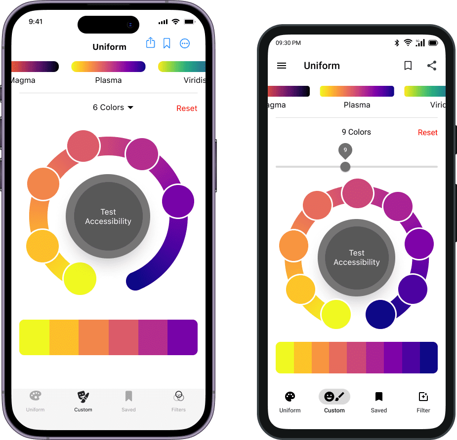

Color Ramp Generator - iOS/Android App
Phase 1 (done)
Color Ramp Generator
For iOS
The first basic version of this app is available at the appstore here. Please stay tuned for updates towards the final design.

iOS Conference Singapore 2023
I had the great pleasure of being invited to speak about this design in the Singapore iOS conference
Who is this for?
The data analyst, mathematician, scientist or developer who is working with data visualizations or data stories. They are motivated by their love of working with numbers and logic, and have a mission to convert data insights into value.

Their typical day is spent meeting with clients, cleaning/preparing data and eventually training and testing models. One challenge they face is making their visualizations compelling, understandable and accessible.
History
Scientists, engineers and developers who uses R, Python or D3 are familiar with the well known colormaps that were created by Nathaniel Smith and Stefan van der Walt. These colormaps greatly improve the user experience of interpreting simple or complex data visualizations and can be seen in many discrete charts or heat-maps such as the one below.
Colormap generators exist so what new features do I want to bring?
Outside of R and Python, there are already a few online websites where one can generate the hex codes for a given number of color points across the colormap. I really wanted to to bring this capability into a new User Interface for a mobile app that can be used offline and have some additional capabilities. These would include letting the user customize individual colors, perform accessibility tests as well as copy and share their palettes.
The job to be done - Make it easier to customize and apply to visuals outside of R, Python and D3.
We can make reporting visuals more engaging and less overwhelming when using harmonious color ramps. Scientists and Engineers may already know, or want to discover, that creating harmonious and compelling visualizations will attract a wider audience and keep them more engaged. In academic conferences, what I remember most is 1) A compelling speaker and 2) A chart or visual that tells a striking story.
An offline app for iOS and Android would make these ramps more accessible.

Android Design
Both the iOS and Android design use native components that clearly differentiate themselves from one another. Staying true to the identiy of the operating system is important for the user experience because it provides familiarity, consistency and a sense of pride for loyal users.

Android Flow
The Android design has the same information architecture and user flow as for iOS.
Enhancing Data Visualizations
These color ramps greatly improve the users flow through complex data visualizations. In addition to being beautiful and better for data interpretation, these colormaps have also been tested on the most common conditions of colorblindness.
From Idea to Action
Swift Feasibility Test
One evening, I downloaded the colormap data and tested some basic logic in SwiftUI to confirm that it was possible to work with the colormap data on the Swift platform.
A Proposal
I then took the opportunity to jump into Figjam and think the idea through. I had a few core functionalities in mind that would help an everyday user easily access and make use of the ramps.
User Flow
For this app, users would have access to data points on the colormaps and be able to
- Generate a uniform color palette of any size
- Generate a nonuniform color palette of any size
- Save and share their color palettes
- Test the colors performance in data visualizations, colorblind conditions and contrast.
- Have a little fun by using the colormaps to filter images

Grey Boxing
I really love designing (and building) for Native, so much that even when grey-boxing I could not seem to shut up.
iOS versus Android
Here I point out all of the differences between the iOS and Android user interfaces. It is not required, but I went an extra mile of learning Swift and Kotlin thoroughly and I also carry an iPhone and Samsung Phone. Not every UI designer needs to do this. For me, it gave me an even deeper understanding of the operating system for which I am designing for.

App Store Inspiration
The best design ideas come from analyzing real apps directly on your phone. Another reason I carry an iPhone and Android phone is so that I can download the same apps with each and do a comparison. Sometimes apps will look almost identical on iOS and Android, depending on how the app was designed as well as the UI technology used.
Updated Screen Designs
Seeing the user interfaces implemented in real apps was the biggest inspiration throughout the entire design process. While Dribble is great for expanding the mind, the app stores shed light on what final design decisions were made, and what really works for users.
Sounds and Haptic Feedback
The color selection process can be made more immersive and fun with sounds and haptic feedback. This also brings up the fascinating topic of Chromesthesia, or 'color hearing', where musical tone causes a person to see color. One user reported seeing lighter colors for high notes and darker colors for low notes.
Gestures
Can the user hold this app in one hand while using a BI tool in the other hand? Here we do an analysis on the types of gestures used and confirm that they can be performed with one hand, either the left or the right hand.
Navigational Gestures (1 tap)
- Tab bar
- 'More' menu
- Test button
- Single color drill-down
Action Gestures (1 tap)
- Reset
- Save
- Share
Transform Gestures
- Number of Colors (iOS pick, Android slide)
- Color position (slide)

Final Screens (iOS and Android)
Customizations
Depending on how the colors are used, the user may want to adjust the saturation in order to suit specific accessibility needs. This is extremly important when displaying text.
Contrast Test
While selecting colors, the user can actively test the color contrast performance right in the same app and make the necessary adjustments in order to satisfy color accessibility requirements. For a given color pair, the color contrast performance is different depending on which color is in the foreground versus background.

iOS Screens
Pros and Cons of designing for Native iOS in Figma
- Pro: You can copy SF symbols directly as SVG and paste them into the design
- Con: There are not as many UI kits available
Android Screens
Pros and Cons of designing for Android in Figma
- Pro: There is a large number of very well maintained UI kits available
- Pro: You can customize the fill, corner radius and size of the material icons before using them
- Con: You have to first download the material icons, rather than copying and pasting them directly

Figma Party
iOS Night
This was all done using a trackpad. Just kidding :D
I am yet to use a promising new tool called 'Play' that enables designing iOS apps with native components directly on a mobile device.Mobile app development becoming easier
Native Apps provide the best user experience, especially when accessing hardware and harnessing features such as AR. Native development is known to be expensive but the modern declarative frameworks such as SwiftUI for iOS and Jetpack Compose for Android make it building beautiful high quality user interfaces and apps more efficient.
In addition, KMP seems like a promising architecture where the SwiftUI or Jetpack Compose UI views can be driven by the same backend and logic. Just a note, this is a very simplified explanation of KMP. I am not a KMP expert so I won't go further into this :D
Uniform Color Ramp
Right from our pocket we can select the desired color map and number of colors to generate. The concept is slightly similar to what can be seen on the web but enhanced and designed for a mobile interface.

Custom Color Ramp Points
The color point selection functionality is extended to being able to customize the points. For example, if due to accessibility issue the user may want to exclude yellow.
Save Colors
The most practical feature to stand out is the ability to save and copy entire palettes or individual colors. Currently, when users generate a palette for example with R, they need to copy down the hex codes themselves or regenerate the palette again.


Contrast Test
Testing the contrast between iterations would no longer require copying hex codes into a separate website. Ease of testing encourages more testing. Overall this makes the life of a data or infographic visual designer easier.
Data Chart Test
An advanced preview of how the colors would appear in popular charts ranging from bar charts to heatmaps. When it comes to being able to discriminate between colors, heatmap visualizations have very different requirements as compared to discrete bar charts.
Colorblind Test
We can test the colorblind performance, without having to go to another website or app. There are two main types of colorblindness known; red-green and blue-yellow, and these can each be broken down further. This is to be covered in more detail in the information section of the app.

Acknowledgements
Within the app itself, I would like to acknowledge the colormap creators, Nathaniel Smith and Stefan van der Walt, who have kindly allowed 3rd parties access to use this color data.

Save discrete color sets for later
Not to be repetitive, but to emphasize again, that palette saving is one of the most important features which does not currently exist with these color maps. Each configuration can be shared and/or saved for later use. One does not have to do screen captures, note down, or regenerate / redesign the same color palettes again.

I cannot wait to start building this in SwiftUI
What I learned
- The best design inspiration for native apps comes from analyzing real apps first
- Designing native apps is the most fun area of UI design (for me)
What I believe
- You can achieve the best user experience with native apps
- Native apps may seem more expensive to develop at first but for the long term, are easier to maintain and risk less technical debt